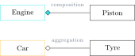

Definition
- Aggregation (hollow diamond on the whole): a car and its tyres. The part exists before and after the whole and can move to another whole.
- Composition (filled diamond): an engine and its pistons. A part belongs to exactly one whole at a time, and destroying the whole destroys its parts.
- Optional composition
A 0..1 ◆ B: anAowns zero or oneB.
In C++ the difference decides who calls delete: in composition the whole is responsible for the memory of its parts; in aggregation it only points to them.
Picture

Implementing optional composition in C++
class A {
int i;
B* pb; // owned: A must new it, copy it and delete it
public:
A() : i(0), pb(nullptr) {}
A(int i_, std::string s) : i(i_), pb(new B(s)) {}
A(const A& a); // deep copy (see below)
A& operator=(const A& a);
~A() { delete pb; }
};
A plain member B b; would force cardinality exactly one; the pointer allows zero. The pointer makes A responsible for the copy semantics, or, better, a std::unique_ptr<B> (see smart pointers) makes the ownership explicit.
Intuition
Ask "who destroys it?". If the answer is "the whole, and nobody else", it is composition.
Pitfall
With an aggregation the whole must not delete its parts; with a composition it must not share them. Mixing the two produces double deletes or leaks.